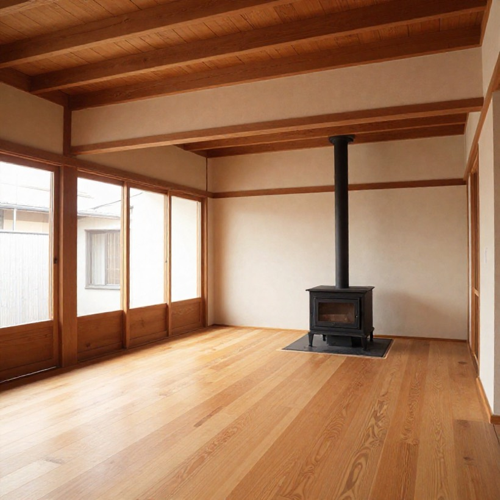
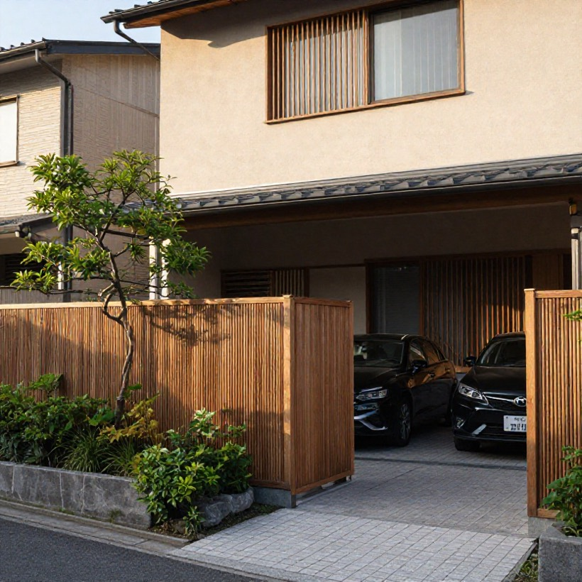
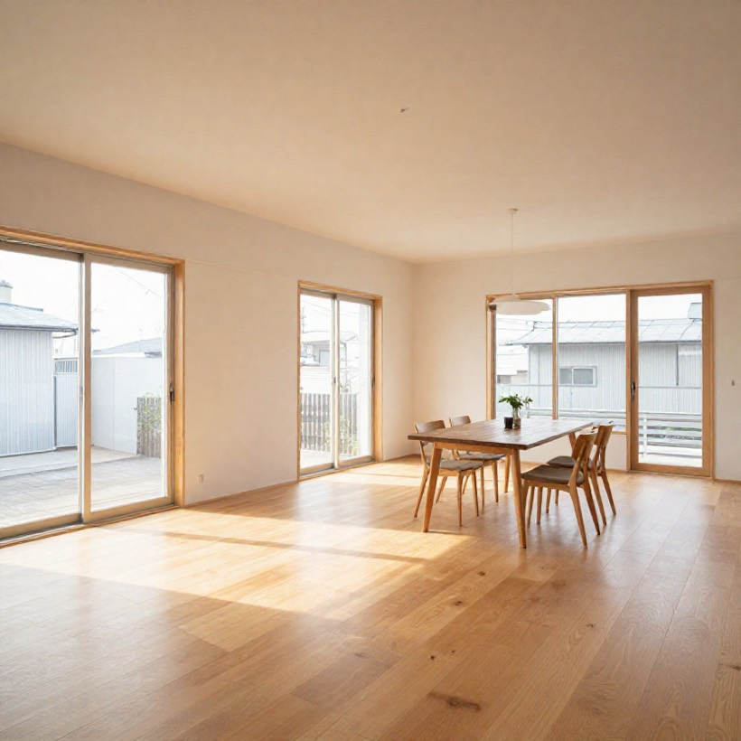
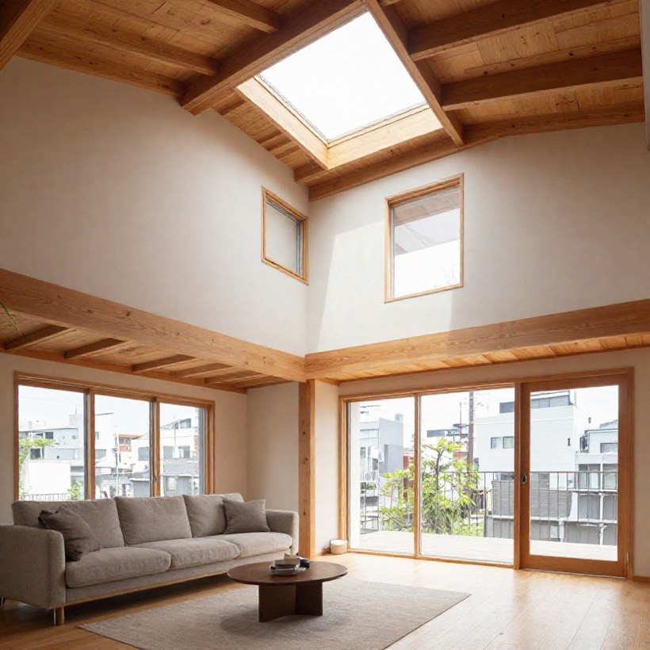
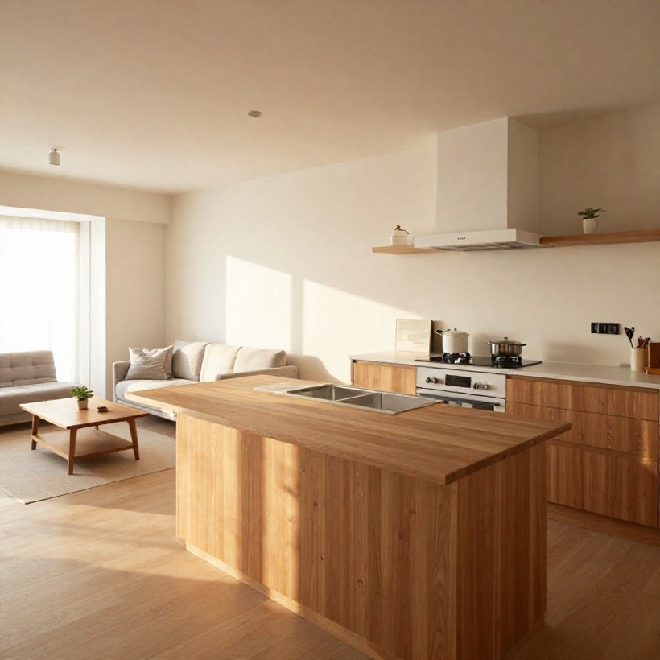
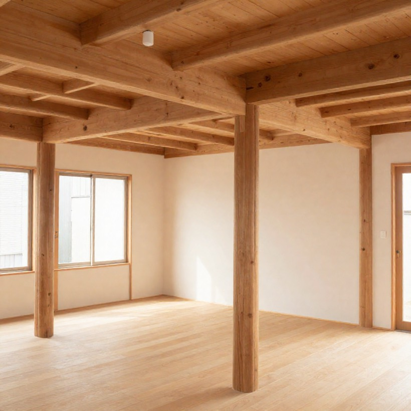
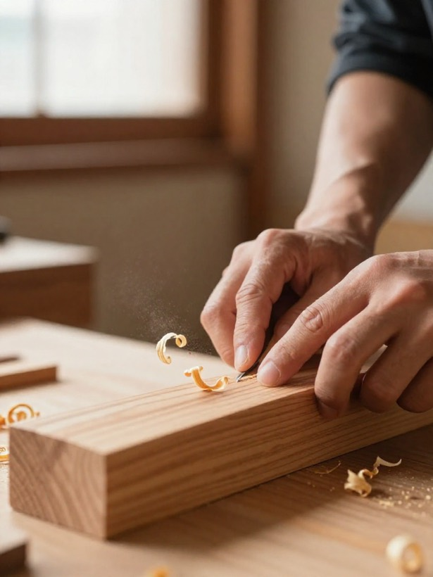

注文住宅・新築NEW BUILD
土地探しから設計・施工まで一貫対応。自然素材を活かした、世界に一つの「わが家」を、ご予算に合わせてご提案します。
地域密着の工務店・豊明市 注文住宅 ・ リフォーム ・ 外構
派手さより、確かさを。自然素材の手ざわりと、職人の手しごとで、
家族の時間をやさしく包む住まいを。
豊明の気候・暮らしを知るからこそ建てられる、一生ものの一棟を。
Since
1973
豊明で愛されて50年
Works
注文住宅からリフォーム・外構まで。
実際の施工写真を、業種タグ付きで掲載できます。お客様の「なりたい暮らし」の参考に。

豊明市 K様邸
家族が自然と集まる大きな土間と、薪ストーブのある暮らし。経年で味わいを増す自然素材で。

大府市 T様邸
建物に合わせた木格子と植栽で、街並みにやさしく溶け込む外構に。駐車2台分も確保。

刈谷市 S様邸
耐震補強と断熱を一新。間取りを見直し、親世帯と子世帯が心地よく暮らせる住まいに再生。

名古屋市緑区 M様邸
限られた間口でも開放感を。高い天井と大開口で、街なかでも明るく風が通る住まいに。

豊明市 Y様邸
壁付けから対面式へ。収納と動線を整え、毎日の家事がぐっと楽しくなるLDKに。

東郷町 H様邸
耐震診断から補助金申請まで一貫サポート。暮らしを止めずに、安心の構造へ補強。
Crafted · Honest · Lasting
流行ではなく、
家族の「これから」を建てる。

Concept
家は、暮らしの器。30年後も、好きでいられる家を。
木匠の家（きしょうのいえ）は、豊明の地で半世紀、家づくりを続けてきました。 大切にしているのは、流行のデザインを追うことより、 その家族が30年・40年と心地よく暮らせる「確かさ」。
無垢の木、塗り壁、自然の風と光。手で触れてうれしい素材を、 顔の見える職人が一棟ずつ丁寧に。建てて終わりではなく、 地元の工務店として、住まいの一生に寄り添い続けます。
代表 ─ 大工棟梁 ／ 木村 誠一 ※サンプル。代表者名・肩書は差し替え可
Services
新築からちょっとした修繕まで。家のことなら、地元の工務店にまるごとお任せください。
土地探しから設計・施工まで一貫対応。自然素材を活かした、世界に一つの「わが家」を、ご予算に合わせてご提案します。
水まわりの改修から間取り変更、フルリノベーションまで。住み慣れた家を、暮らしの変化に合わせて快適に生まれ変わらせます。
門まわり・駐車場・庭・ウッドデッキ。建物と調和し、街並みにやさしく溶け込む外構を、植栽計画まで含めてデザインします。
耐震診断から補強工事、断熱リフォームまで。大切なご家族と住まいを地震・暑さ寒さから守ります。補助金の申請もサポート。
Flow
はじめての家づくりも、ご安心を。ご相談から引き渡し・アフターまで、一つずつ丁寧にご案内します。
まずは、お電話・フォーム・LINEからお気軽に。「土地探しから」「予算が不安」でも大丈夫。完成見学会へのご参加も歓迎です。無理な営業は一切いたしません。
暮らしのご希望・ご予算をじっくりお伺いします。リフォームや外構は現地を拝見し、住まいの状態を確認。家族の「こうしたい」を一緒に整理します。
ヒアリングをもとに、間取りプランと明朗なお見積りをご提示。図面とご予算にご納得いただけるまで、何度でも丁寧に打ち合わせを重ねます。
ご契約後、いよいよ着工。地元の職人が一棟ずつ丁寧に施工し、工事の進み具合はこまめにご報告。現場見学もいつでもどうぞ。
完成検査ののち、お引き渡し。定期点検と長期保証で、住まいの一生に寄り添います。地元の工務店だから、何かあればすぐ駆けつけます。
Voice
Googleクチコミ ★4.9（※サンプル）。家を建てたご家族からの、うれしい言葉。
予算の相談に本当に親身にのってくださいました。無垢の床は冬でも素足が気持ちよく、子どもが一番のびのび過ごしています。お願いして大正解でした。
築40年の実家を二世帯にリフォーム。住みながらの工事でしたが、職人さんの気配りが行き届いていて安心でした。明るく暖かい家に生まれ変わりました。
他社は契約を急かす中、ここだけは図面を何度も書き直してくれました。引き渡し後の点検もきちんと来てくださり、地元の工務店にお願いしてよかったです。
Company
| 会社名 | 木匠の家／株式会社○○工務店 |
|---|---|
| 所在地 | 〒470-1100 愛知県豊明市栄町0-0 |
| 電話 | 0562-00-0000 |
| 営業時間 | 9:00〜18:00 |
| 定休日 | 日曜・祝日（完成見学会開催日を除く） |
| 事業内容 | 注文住宅・リフォーム・外構・耐震/断熱改修 |
| 建設業許可 | 愛知県知事 許可（般-00）第00000号 ※サンプル |
| 対応エリア | 豊明市・刈谷市・大府市・名古屋市緑区・東郷町 ほか |